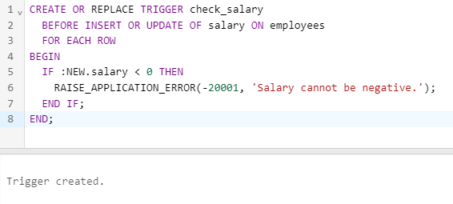

Triggers
A trigger is a special kind of stored procedure in PL/SQL that is automatically executed in response to certain events or changes in the database. Triggers can be used to enforce complex business rules, maintain referential integrity, or perform auditing and logging of database activities.
Types of Triggers :
There are two types of triggers in PL/SQL :
- Row-level triggers: These triggers fire once for each row affected by a DML statement (INSERT, UPDATE, or DELETE). They are used to enforce complex business rules that depend on the values of individual columns in the affected rows.
- Statement-level triggers: These triggers fire once for each DML statement, regardless of the number of rows affected. They are used to perform auditing and logging of database activities.
Syntax :
The basic syntax of a trigger in PL/SQL is as follows :
CREATE [ OR REPLACE ] TRIGGER trigger_name { BEFORE | AFTER } [ INSERT | UPDATE | DELETE ] [ OF column_name ] ON table_name [ REFERENCING OLD AS old NEW AS new ] [ FOR EACH ROW ] [ WHEN (condition) ]
Output:
